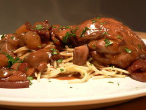

Coq au vin
I signed up to be a recipe tester for Cook’s Illustrated, and my first recipe was for coq au vin. I had never made this dish before, although I’ve enjoyed it numerous times in restaurants. A thick, meaty red wine sauce is always a good idea.
This is not a recipe I would have made normally, since I have such an aversion to boneless skinless chicken. In my evaluation, I told them it was a silly move. (January 2007 update: they took the breasts out of the recipe.) It doubles the cost of the ingredients, and it halves the flavor of the finished dish. Are people so afraid to eat around bones? It’s French country cooking! But I have already lamented the fact that this magazine is now pandering to lazy cooks who can’t devote more than 15 minutes to preparing dinner.

Otherwise, it’s a good recipe. It took an hour and a half total. It strikes me that people who are willing to spend more than an hour cooking are not interested in sissy meat, such as this recipe calls for. I wish they had asked me to cut up a whole chicken, but I can do that on my own next time. The flavor and texture of the sauce were very appealing, and we continued to spoon it over our plates as we ate.
It may be some kind of violation to provide the public with this test recipe, but I didn’t sign any confidentiality agreements, and anyone can sign up to test, so whatever. I’d recommend using bone-in chicken, and I’d also recommend cutting the bacon into small lardons in order to have a bit of smokiness in every bite.
Coq au vin
Be sure to discard the wine-brine rather than adding it to the stew along with the chicken breast to prevent the sauce from becoming too salty. Serve the stew with egg noodles or mashed potatoes.
Serves 4 to 6
1 bottle medium-bodied red wine
Salt
1 pound boneless skinless chicken breast halves, cut crosswise into even quarters
10 sprigs fresh parsley plus 2 tablespoons minced fresh parsley leaves
2 sprigs fresh thyme
1 bay leaf
2 cups low-sodium chicken broth
6 ounces bacon, preferably thick-cut, cut crosswise into 1/4-inch pieces
1 1/2 pounds boneless skinless chicken thighs, trimmed of excess fat
Ground black pepper
3 tablespoons unsalted butter
24 frozen pearl onions (evenly sized), thawed, drained, and patted dry (about 1 cup, or 5 ounces)
8 ounces white button mushrooms, wiped clean, trimmed, halved if small and quartered if large
2 medium cloves garlic, minced or pressed through garlic press (about 2 teaspoons)
1 tablespoon tomato paste
2 tablespoons all-purpose flour
- Stir 1/4 cup wine and 1 teaspoon salt in small bowl until salt is dissolved. Place chicken breast pieces in large zipper-lock bag; pour in wine mixture, seal bag, and refrigerate at least 30 minutes or up to 45 minutes.
- In large saucepan, simmer remaining wine, 10 sprigs parsley, thyme, bay, and broth medium-high heat until reduced to 3 cups, about 25 minutes. Remove and discard herbs.
- Meanwhile, cook bacon in large Dutch oven over medium heat until fat has rendered and bacon is golden brown, 7 to 8 minutes. Remove bacon with slotted spoon to paper towel-lined plate to drain; set aside. Discard all but 1 tablespoon fat.
- Season chicken thighs liberally with salt and pepper and fold in half. Heat remaining tablespoon bacon fat in Dutch oven over medium-high heat until hot but not smoking. Brown thighs in single layer (thighs should remain folded in half to prevent overcooking) until just golden, 2 minutes per side. Transfer chicken to large plate.
- Melt 1 tablespoon butter in now-empty Dutch oven over medium-high heat. When foaming subsides, add pearl onions and mushrooms; cook, stirring occasionally, until lightly browned, 7 to 8 minutes. Reduce heat to medium, add garlic and cook until fragrant, about 30 seconds. Add tomato paste and cook 1 minute, stirring frequently. Add remaining 2 tablespoons butter. When butter is melted, stir in flour and cook, stirring constantly, about 1 minute.
- Add chicken thighs, reserved cooked bacon, reduced wine/broth mixture, and 1/4 teaspoon pepper; scrape bottom of pot with wooden spoon to loosen browned bits. Bring to boil over medium-high heat, reduce heat to medium-low, cover pot, and simmer 15 minutes; stir. Remove breast pieces from marinade and add to stew (discard marinade). Cover pot and simmer 10 minutes longer, until breast pieces are cooked through.
- Using slotted spoon, transfer chicken to large serving bowl; cover with foil to keep warm. Increase heat to medium-high and simmer sauce until it is thick, glossy, and measures 3 1/4 cups, about 5 minutes. Pour sauce over chicken and sprinkle with remaining 2 tablespoons parsley. Serve immediately.
Comments
I adore coq au vin. Totally agree re boneless breasts. Silly business.
I know that the Best Recipe has a lengthy recipe for coq au vin that uses bone-in chicken. I plan to make it someday but the moment has never been right. It definitely looks like something I’ll end up spending several hours on.
I’m one of those people who look for quick and easy recipes, although I want something that still tastes great even though it’s quick and easy. I certainly don’t shy away from long and complicated but it’s not practical every time I cook.
I’d also like to note that one of life’s great disappointments is spending hours and hours on a recipe only to find out that it’s … ok. Not bad. Not terrible.
That’s really disheartening.
check out alton brown’s coq au vin recipe. he does a whole good eats on it.
Boneless chicken breasts are MUCH, MUCH healthier than random chicken bits stewed around for hours. Much lower in fat, much lower in cholesterol, much higher in protein. Using boneless breasts in this type of recipe is a no-brainer if you want to strike a balance between comfort/indulgence and nutritional value.
I agree with you Leland, boneless breasts are a terrible idea for coq au vin. Personally, in my cooking I’m not interested in striking a balance between good flavor and nutritional value; I want it to taste good. I think that’s a no-brainer if you take the trouble to cook.
Boneless chicken breasts are hardly worth feeding to a dog. They’re for people who want to pretend they’re not eating meat. And I would not call the other parts of the bird “random chicken bits.” Chickens actually have legs, thighs, and wings, all delicious.
Health nut’s comment makes no sense at all. The alternative to breasts are thighs and legs; the alternative to boneless is a whole chicken still having its bones. Nut seems to have confused Leland with someone promoting chicken mcnuggets. Also, Nut doesn’t know much about health, alas. The whole bird is good!
Add a comment